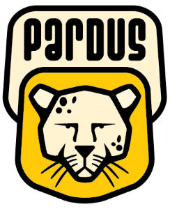
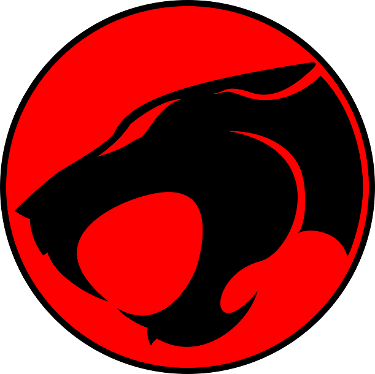

WORKS

Tübitak Ulakbim tarafından geliştirilen yerli ve milli işletim sistemimiz debian tabanlı Pardus için;
Beta testleri, Yazılım geliştirme, Tasarım, Çeviri, Belgelendirme ve Öneride bulunma gibi süreçlerde yer alma.Pardus Gönüllü Platformu

Forumlarda,
Donanım, Sistem, Network, Güvenlik gibi konularda teknolojik çözümler üretme ve önerilerde bulunma.Pardus ForumTHM Forum
Siber güvenlik, Sızma testi, Hata ayıklama gibi çevrimiçi teknolojik çözümler sunan THM (TryHackMe) platformu üzerinde;
IT güvenliği, Network güvenliği, Network teknolojileri gibi alanlarda çözümler üretme ve önerilerde bulunma.